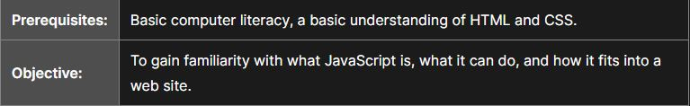
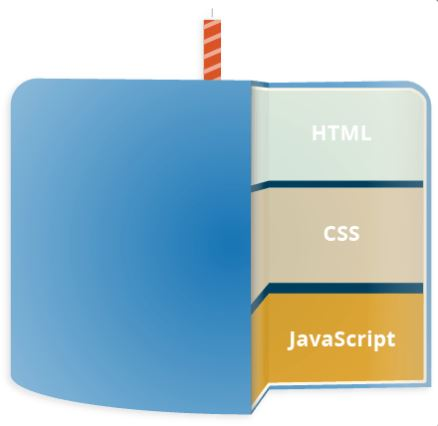

What is JavaScript?
Welcome to the MDN beginner's JavaScript course! In this article we will look at JavaScript from a high level, answering questions such as "What is it?" and "What can you do with it?", and making sure you are comfortable with JavaScript's purpose.
A high-level definition
JavaScript is a scripting or programming language that allows you to implement complex features on web pages — every time a web page does more than just sit there and display static information for you to look at — displaying timely content updates, interactive maps, animated 2D/3D graphics, scrolling video jukeboxes, etc. — you can bet that JavaScript is probably involved. It is the third layer of the layer cake of standard web technologies, two of which (HTML and CSS) we have covered in much more detail in other parts of the Learning Area.
- HTML is the markup language that we use to structure and give meaning to our web content, for example defining paragraphs, headings, and data tables, or embedding images and videos in the page.
- CSS is a language of style rules that we use to apply styling to our HTML content, for example setting background colors and fonts, and laying out our content in multiple columns.
- JavaScript is a scripting language that enables you to create dynamically updating content, control multimedia, animate images, and pretty much everything else. (Okay, not everything, but it is amazing what you can achieve with a few lines of JavaScript code.)
Summary
JavaScript (or "JS") is a programming language used most often for dynamic client-side scripts on webpages, but it is also often used on the server-side, using a runtime such as Node.js.
JavaScript should not be confused with the Java programming language. Although "Java" and "JavaScript" are trademarks (or registered trademarks) of Oracle in the U.S. and other countries, the two programming languages are significantly different in their syntax, semantics, and use cases.
JavaScript is primarily used in the browser, enabling developers to manipulate webpage content through the DOM, manipulate data with AJAX and IndexedDB, draw graphics with canvas, interact with the device running the browser through various APIs, and more. JavaScript is one of the world's most commonly-used languages, owing to the recent growth and performance improvement of APIs available in browsers.
Origin and History
Conceived as a server-side language by Brendan Eich (then employed by the Netscape Corporation), JavaScript soon came to Netscape Navigator 2.0 in September 1995. JavaScript enjoyed immediate success and Internet Explorer 3.0 introduced JavaScript support under the name JScript in August 1996.
In November 1996, Netscape began working with Ecma International to make JavaScript an industry standard. Since then, the standardized JavaScript is called ECMAScript and specified under ECMA-262, whose latest (twelfth, ES2021) edition is available as of June 2021.
Recently, JavaScript's popularity has expanded even further through the successful Node.js platform—the most popular cross-platform JavaScript runtime environment outside the browser. Node.js - built using Chrome's V8 JavaScript Engine - allows developers to use JavaScript as a scripting language to automate things on a computer and build fully functional HTTP and WebSockets servers.
Syntax and Basic Construct
JavaScript allows you to add interactivity to your pages. Common examples that you may have seen on the websites are sliders, click interactions, popups and so on.
Continue Reading →Learn DOM Manipulation
The Document Object Model (DOM) connects web pages to scripts or programming languages by representing the structure of a document—such as the HTML representing a web page—in memory.
Continue Reading →Learn Fetch API/Ajax(XHR)
Ajax is the technique that lets us send and receive the data asynchronously from the servers e.g. updaing the user profile or asynchronously fetch the list of searched products without reloading the page.
Continue Reading →Es6+ and modular Javascript
ECMAScript 2015 or ES2015 is a significant update to the JavaScript programming language. It is the first major update to the language since ES5 which was standardized in 2009. You should look at the features introduced with ES6 and onwards.
Continue Reading →Learn and understand the concepts
JavaScript Concepts - JavaScript Hoisting refers to the process whereby the interpreter appears to move the declaration of functions, variables or classes to the top of their scope, prior to execution of the code.
Continue Reading →